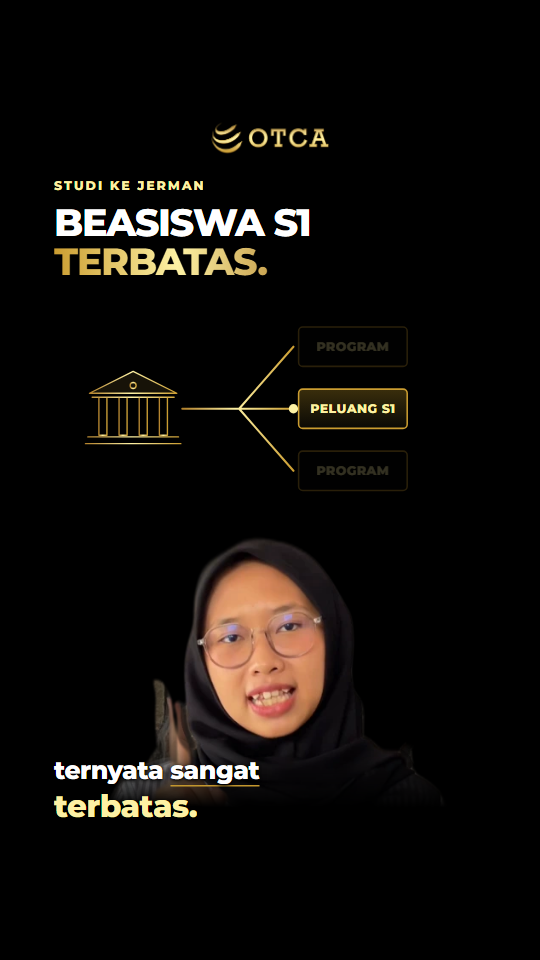
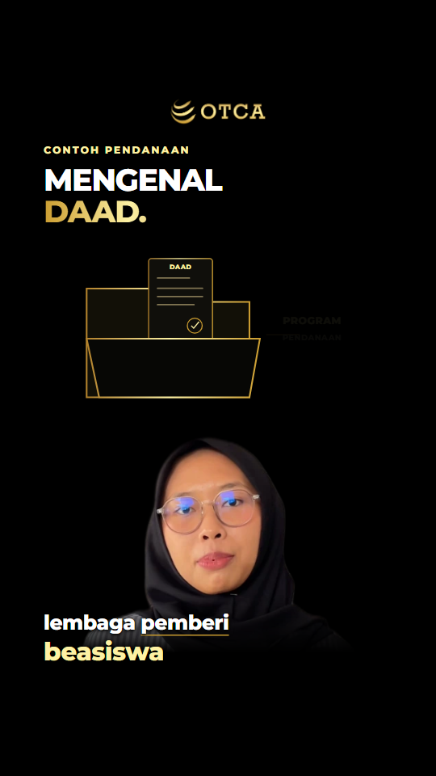
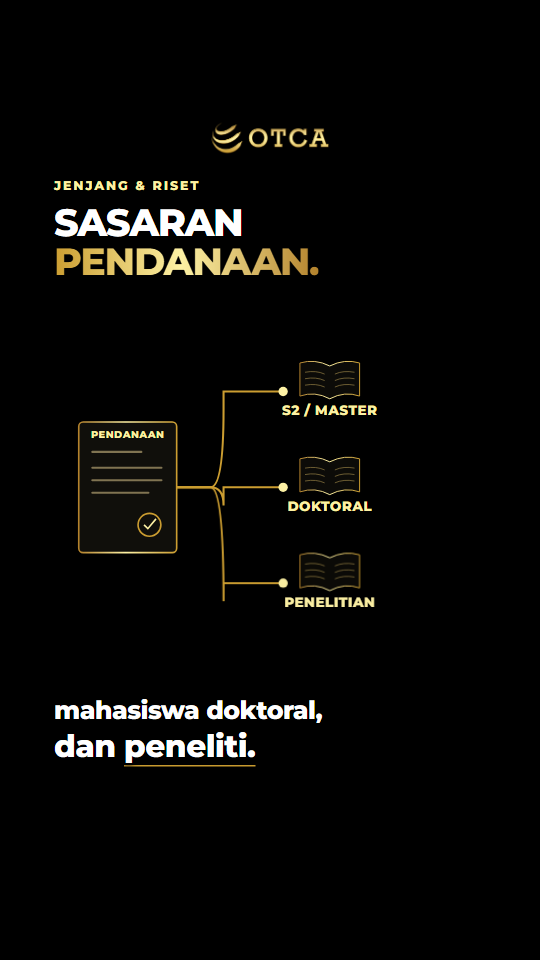
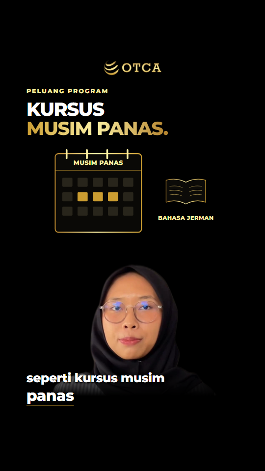
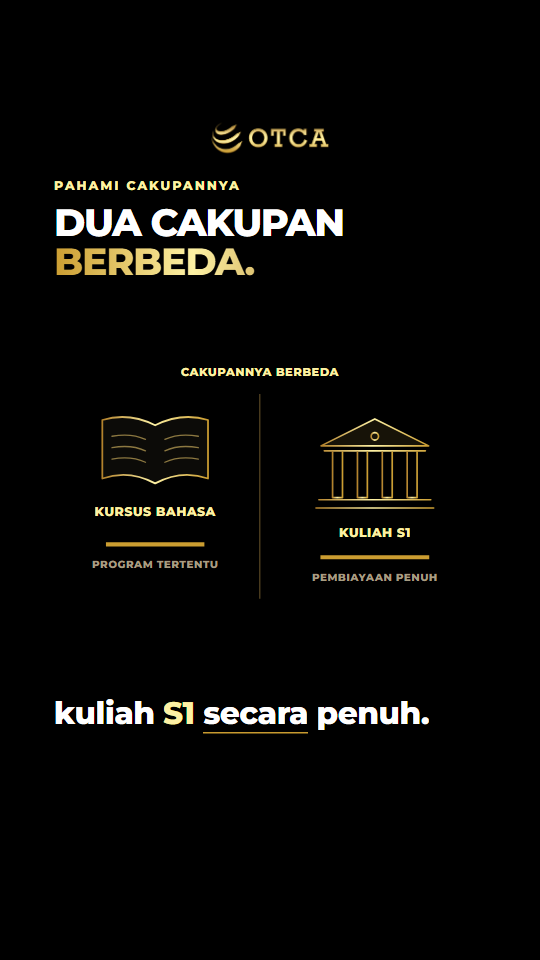
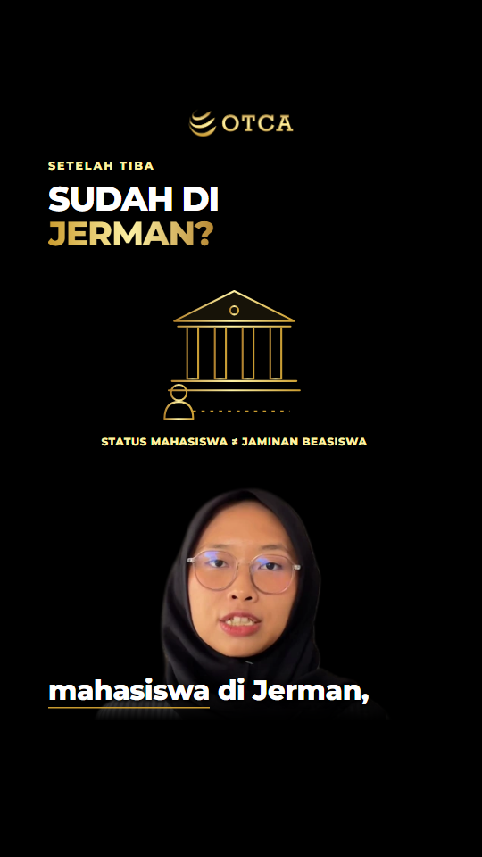
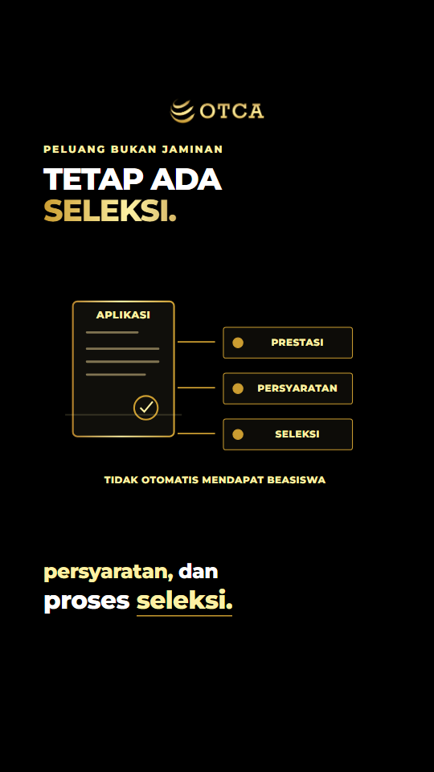
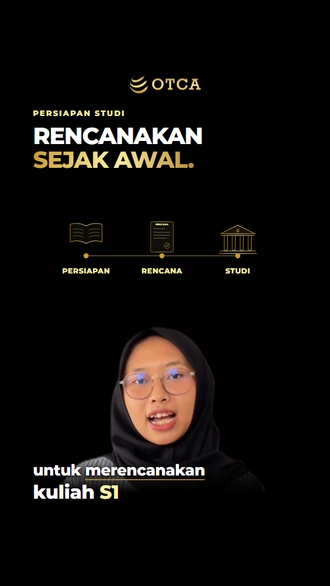
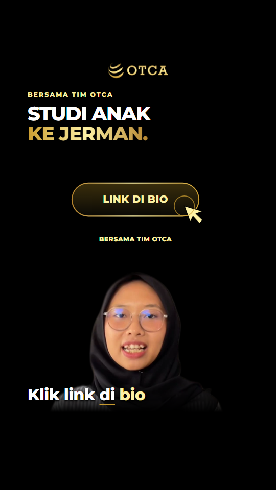

REVISI 03 · MENUNGGU PERSETUJUAN
Grafis yang bekerja.
Objek yang merespons.
9 adegan / 51,55 detik / SVG & React di Remotion.
Semua ilustrasi di sini dibangun dari kode; tidak memakai aset ImageGen revisi sebelumnya. Logo resmi dan rekaman talent tetap media sumber. Ini storyboard gambar, bukan video final. Keluwesan gerak dan transisi belum dinilai melalui playback.
Grafis emas di atas dan talent di bawah, bergantian dengan tiga adegan layar penuh. Subtitle Montserrat editorial, maksimal dua baris; ucapan dan CTA tetap dari video sumber.

ADEGAN 01 / 0.00–4.10 DETIK
Peluang yang terbatas
Cabang program terbentuk; titik bergerak menuju peluang S1, jalur lain meredup. Tanpa angka peluang rekaan.
Ucapan sumber
Halo parents, peluang beasiswa S1 di Jerman ternyata sangat terbatas.

ADEGAN 02 / 4.10–8.10 DETIK
Direktori program
Lembar DAAD terangkat keluar dari map; sampul dan lembar adalah objek terpisah. Label pendanaan menyusul setelah lembar terbaca.
Ucapan sumber
Contohnya DAAD, lembaga pemberi beasiswa terbesar di Jerman.

ADEGAN 03 / 8.10–16.50 DETIK
Sasaran pendanaan
Tiga cabang tersambung berurutan ke S2, doktoral, dan penelitian sesuai ucapan. Buku di setiap cabang memberi konteks jenjang.
Ucapan sumber
Sebagian besar program pendanaannya memang ditujukan untuk lulusan S1 yang ingin melanjutkan S2, mahasiswa doktoral, dan peneliti.

ADEGAN 04 / 16.50–22.90 DETIK
Kursus musim panas
Lembar kalender berputar pada engsel atas. Sel periode tersorot saat kursus disebut; buku bahasa menjadi pasangan ilustrasinya.
Ucapan sumber
Mahasiswa S1 juga punya peluang melalui program tertentu seperti kursus musim panas bahasa Jerman.

ADEGAN 05 / 22.90–27.93 DETIK
Perbedaan cakupan
Buku kursus dan kampus bergerak menjauh; pembatas tumbuh di antaranya. Panjang garis tidak mewakili durasi atau biaya.
Ucapan sumber
Tetapi program ini berbeda dari beasiswa yang membiayai kuliah S1 secara penuh.

ADEGAN 06 / 27.93–30.95 DETIK
Status mahasiswa
Figur memasuki konteks kampus. Pesan visual: status mahasiswa belum menjamin beasiswa. Talent kembali menjadi pusat penjelasan.
Ucapan sumber
Bahkan ketika sudah menjadi mahasiswa di Jerman,

ADEGAN 07 / 30.95–39.70 DETIK
Proses seleksi
Berkas terangkat; garis pemeriksa melintasi dokumen. Jalur dan indikator prestasi, persyaratan, seleksi aktif berurutan. Indikator berarti tahap dibahas, bukan pelamar pasti lolos.
Ucapan sumber
peluang mendapatkan beasiswa tetap tergantung pada prestasi, persyaratan, dan proses seleksi. Tidak semua mahasiswa bisa mendapatkannya.

ADEGAN 08 / 39.70–45.70 DETIK
Rencana studi
Buku, lembar rencana, dan kampus tersusun di jalur persiapan. Gerak mereda untuk memberi ruang pada saran talent.
Ucapan sumber
Jadi, jangan hanya mengandalkan beasiswa untuk merencanakan kuliah S1 anak di Jerman.

ADEGAN 09 / 45.70–51.55 DETIK
Ajakan asli
Penunjuk mendekati link di bio; tombol merespons tekanan singkat dan lingkaran respons meluruh. Penutup mengikuti sumber.
Ucapan sumber
Klik link di bio untuk mulai persiapkan studi anak ke Jerman bersama tim OTCA.
Periksa aksi, bukan hanya pose
Urutan kiri ke kanan menunjukkan perubahan objek pada waktu berbeda. Buka gambar untuk memperbesar.
Lembar keluar dari map
Halaman kalender berputar
Pemeriksaan aplikasi bertahap
Cover OTCA
Template OTCA v1.2 dari proyek Nina yang sama; headline maksimal tiga baris, subheadline maksimal dua.
Persetujuan
Sebut nomor adegan dan bagian yang ingin direvisi. Video final tetap ditahan sampai Anda menyetujui arah ini. Tahap berikutnya memoles kontinuitas, bobot gerak, masking talent, dan audio.